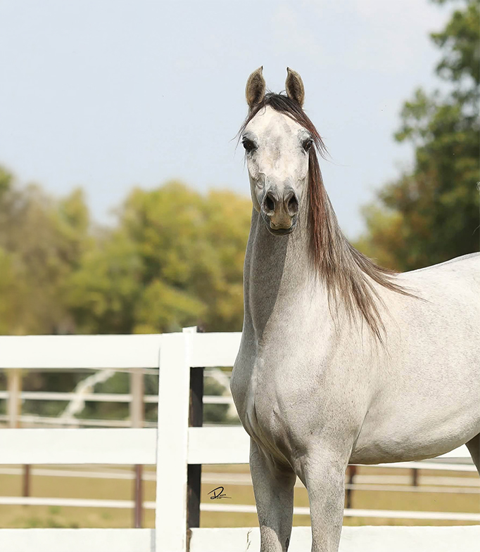
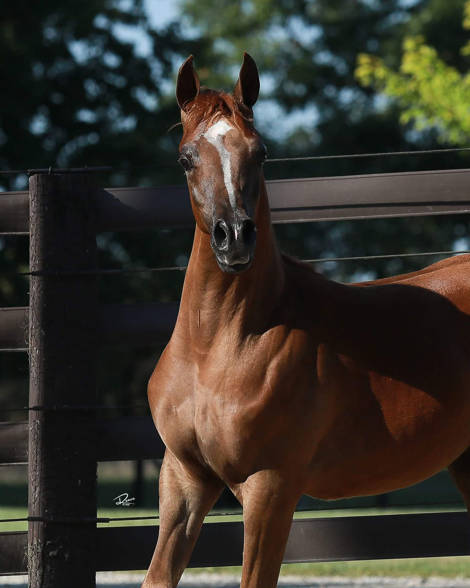
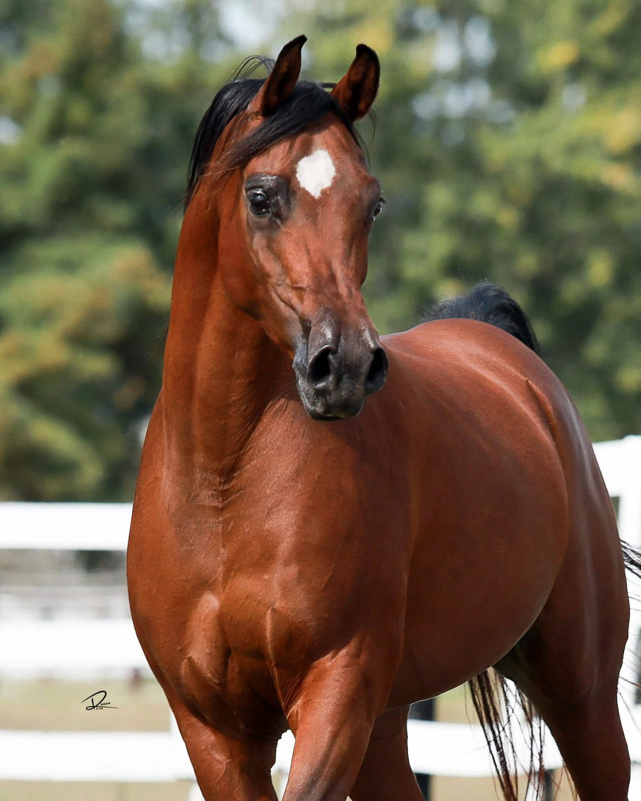
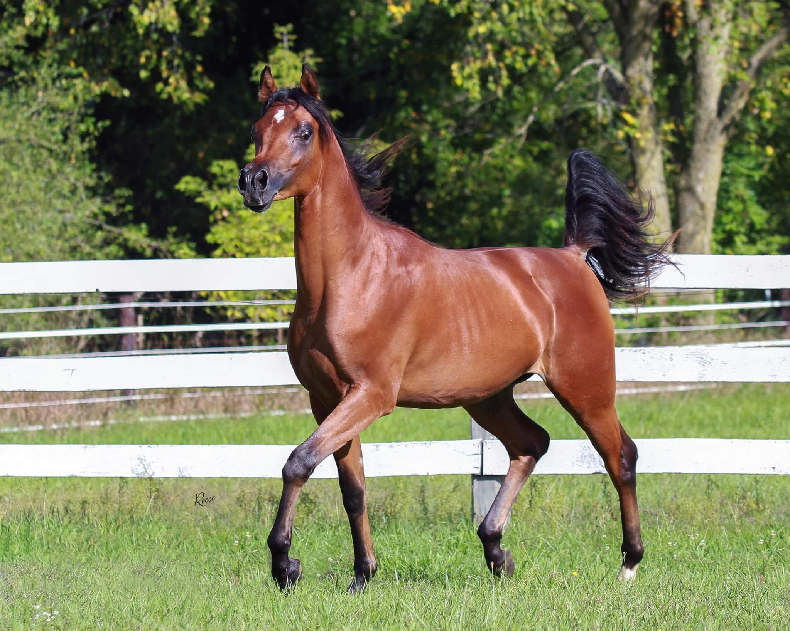
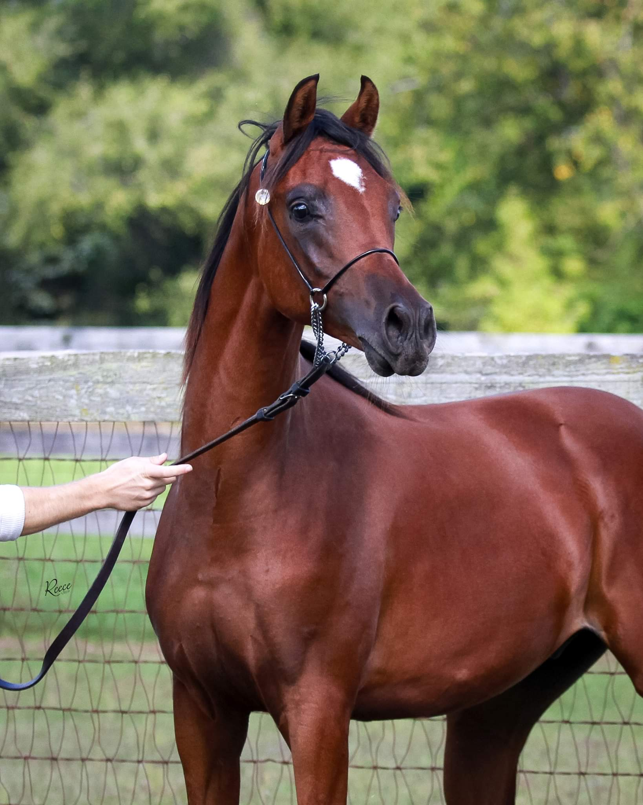
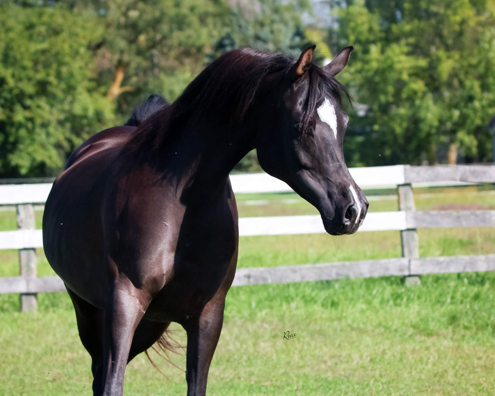
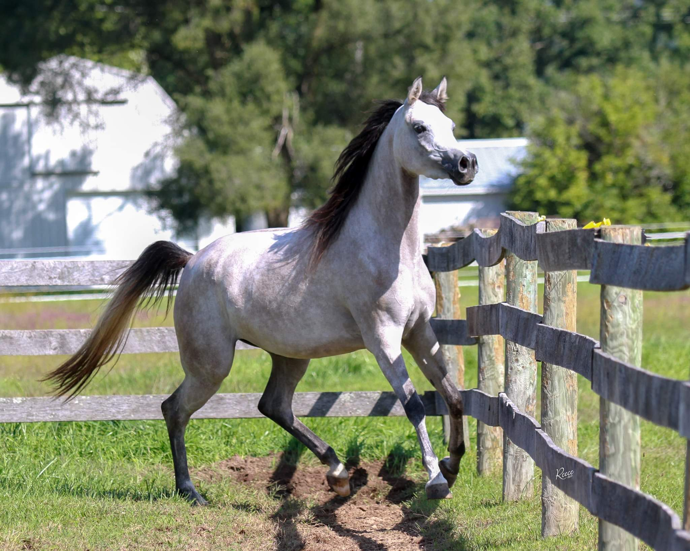
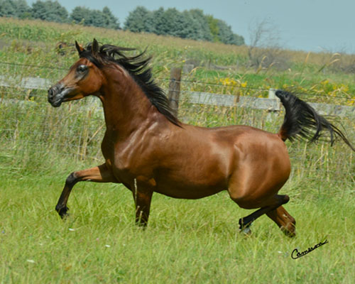

Sale Horses

Marcus El Jamaal WW
(Na-Mous Al Shahania x Malia El Jamaal WW) x Malik El Jamaal
2021 Bay Gelding
Sweepstakes nominated
Marcus is an incredible opportunity for someone looking for a that special horse and
partner to take them to top of their game.
Marcus is not only beautiful but he checks all the boxes for a National quality Sport
Horse.
Brains, size, substance, willing disposition and pure athleticism. He is so light on his
feet he appears to be floating! His open shoulder, gives him great reach the ability to
cover the ground like he is 16.3H horse.
Marcus also likes to Free jump so may
also have hunter jumper potential. I think he is an all around guy, he is very special! He
Is also a Malik El Jamaal Grandson and we know how successful he has been, so many
National Championships in multiple disciplines!!

Lucia Avicii WW
(Allgood Avicii x Malia El Jamaal WW) x Malik El Jamaal
2023 Grey Filly | 15.3H
Lucia Avicii WW is a striking, tall, and athletic filly with both beauty and performance
potential. She combines refinement with power, floating effortlessly across the ground
with an eye-catching trot and exceptional tail carriage.
Correctly built with strong conformation, Lucia is still maturing and continues to
improve, indicating an exciting future ahead. She possesses a natural confidence and
presence that draws attention, paired with an intelligent and kind disposition—making her
a joy to work with and a standout prospect for both halter and performance careers.
Her pedigree further enhances her appeal, with influential sires KM Bugatti and Malik El
Jamaal contributing to her quality and versatility. She is sweepstakes nominated and
eligible for SSS, Medallion Stallion, and AWPA programs, adding significant value for a
competitive show home.
Lucia’s dam, Malia El Jamaal WW, is a proven producer of tall, athletic offspring by
multiple stallions, consistently passing on quality and capability. Lucia is poised to
follow in those footsteps, with the potential to excel in the show ring and later become a
valuable addition to any breeding program.

Gionni WW
(AFA Gianelli x Pashmena WW) x Baha AA
2025 Chestnut Colt
Gionni WW is an exceptional young colt combining elegance, athleticism, and a pedigree
packed with proven champions. Sired by the Scottsdale and U.S. National Champion AFA
Gianelli, he carries a powerful blend of halter and performance bloodlines, including
industry greats such as KM Bugatti, Versace, QR Marc, Khadraj NA, and Marwan Al Shaqab.
This eye-catching colt boasts a beautiful, upright neck, a smooth, balanced topline, and
an effortless, fluid way of moving that will make him stand out in any arena. His presence
and charisma are undeniable—he is a true show horse prospect.
Gionni is sweepstakes nominated, U.S. National Futurity nominated, and Region 12 Spotlight
nominated, making him a strong candidate for top-level competition, including the Breeders
Sweepstakes Futurity at U.S. Nationals.
THis pedigree is further proven by accomplished siblings: his maternal brother Kashmir WW
is a U.S. National Breeders Pays Futurity Bronze Champion and Top Ten, as well as a
multi-Regional Champion. Another brother, Heir To Sultan WW, is a Canadian National
Champion Sport Horse In-Hand and continues to succeed in Western Pleasure. With additional
sisters placing in the Scottsdale International Top Ten, Gionni comes from a family that
consistently produces winners.
This is a rare opportunity to invest in a colt with the pedigree, presence, and potential
to excel at the highest levels.

Dolce WW
(Prottocol x Gisele WW)
2017 Bay Filly

Gabriel WW
((Baha AA x Gisele WW) x Gazal Al Shaqab)
2018 Bay Colt
Gabriel WW is a great show and breeding prospect. He has a super short dished face with huge eyes. He has a wonderful smooth top line, great hip and tail carriage. I love how he seeming floats as he trots, a beautiful thing to see. I am so impressed with his sweet nature, his disposition is one we always hope for and still has lots of show attiude.He loves to show off. If you are looking for a great breeding colt this is one to consider. He has a filled with Egyptian Greatness and Dam of course by the great Gazal Al Shaqab and her tail female goes back to the Aristocrat mare Hal Ane Versare. This colt should sire extreme beauty. On the other side, Gabriel is extremely athletic, he will be a super future western prospect, His brother WW Justianhier (AJA Justified x Gisele WW) is in Training with Julie Daniels in Scottsdale and is a total natural. You will be seeing him in the Show ring soon for Sofia Arabians

WW Steppenwolf
((Fadi Al Shaqab x Arwen WW) x Da Vinci FM)
2018 Bay Colt
Registration Pending
WW Steppenwolf is the next great breeding prospect out of Arwen WW. He is going to be very
tall and refined. I love this colt! He is a late June baby so somewhat immature but
everyday he you can see how elegant he is going to be! He is going to be something special
and why wouldn’t he be.
His maternal brother WW Stivallea (Stival x Arwen WW) who was exported to Israel 7 years
ago has been an amazing sire and producing Champions in the Middle East His son Sultan GK
(WW Stivallea x Al Magna) was just shown for the first time in the US and won Unanimous
Scottsdale Senior Champion Stallion 2019. We are witnessing Greatness!!
I think WW Steppenwolf has incredible potential! He has an fabulous sire in Fadi Al Shaqab
and his Dam Awen WW so beautiful…….. You be the Judge!!!

Aria WW
(LA Karat x Arwen WW By Da Vinci FM)
2012 Black Mare
Aria WW (LA Karate x Arwen WW) Da Vinci FM Has a Stunning Pedigree! She would be a
valuable asset to any serious breeding program large or small. She is the only Daughter in
the US out of the beautiful Arwen WW. Her maternal Sisters Aireonna WW ( Marhaabah x Arwen
WW) who has many Championships and is producing champions along with her sister Ariella WW
( A Jakarta x Arwen WW ) were both exported to the Middle East.. Her maternal brother WW
Stivallea ( Stival x Arwen WW) was exported to Israel and is the sire of numerous
champions over seas and most recently his Son Sultan GK ( WW Stivallea x Al Magna) owned
by Al Babtain Stud of Kuwait. Sultan was Crowned unanimous Scottsdale Champion Stallion,
Vegas World Cup Silver Champion Supreme Stallion, high score of the show. We are looking
forward to seeing Sultan GK again in the ring at US Nationals. Aria’s brother Laurent El
Gazal (Lawrence EL Gazal x Arwen WW) was also exported to Israel and is waiting to make
his debut into the show ring as a 4yr.old Stallion.
Aria is incredibly athletic, she could do multiple disciplines if you are looking for that
special show companion, be it Western, Hunter or even Dressage she has all the right moves
and enjoys the attention. She is kind and sweet. Aria is green broke, and works
beautifully in long lines.

Malia El Jamaal WW
(Malik El Jamaal x Pescha WW by Escape IBN Navarrone-D)
2016 Grey Filly
Milia is a elegant filly that seems to get prettier every day. Her pedigree includes the
biggest names in Polish, Egyptian and Russian bloodlines. I can see her as a future
broodmare, I love the fact that she is a Pinga grand daughter and a great great
granddaughter of Hal Ane Versare who was by Hal that’s Amore. I love her long easy stride
and I think she could be a talented Western prospect or even sport horse. Her Dam Pescha
WW is 15.3 H and Malia will reach that height easily.
Malia is in foal for 2020 to Om El Sinon Las Vegas World Cup Supreme Gold Champion
Stallion 2019

Victoria Beckham WW
(Beckham UA x Selket Royal Jewel)
2017 Chestnut Filly

RD Thyme-X
(Pyro Thyme SA x RD Falcons Fanci)
2007 Bay Mare
Purchase at Scottsdale 2009 from Ray Dawn Arabians to add to our line of broodmares. We
love her charisma and those beautiful eyes. A lovely tall and elegant filly with lots of
attitude and a great breeder pedigree. You may see her in the show ring soon!
In foal to FS Ritz (Scottsdale Signature Action Foal)
She is now under saddle. Beautiful Regional and National level Hunter prospect, Thyme X is
the total package, incredible Athlete and proven producer.
.jpg)